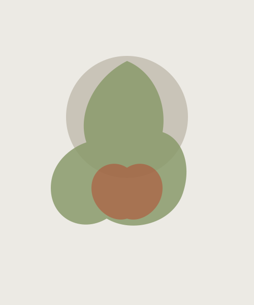
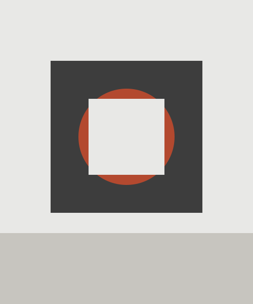
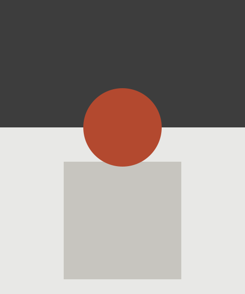

Erna Hürzeler
Erna Hürzeler lebt und arbeitet in Wil. Für ihre Werke verwendet sie Farben, die sie selbst aus Pflanzen gewinnt — ein aufwendiges Verfahren, das ihre botanisch inspirierte Kunst prägt. Im Cityhaus zeigt sie mit «Mädesüss trifft Teufelskralle» eine Auswahl ihrer Pflanzenkunst.

Arturo Di Maria
Arturo Di Maria wurde in Sizilien geboren und lebt seit 25 Jahren im Thurgau. Er gilt als einer der letzten noch aktiven Vertreter der Konkreten Kunst und ist bekannt für Werke von grosser Klarheit und Präzision. Seine Ausstellung «Reduktion» zeigt einen Querschnitt seines Lebenswerks.
